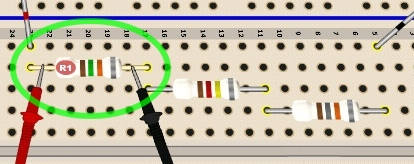
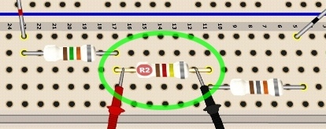
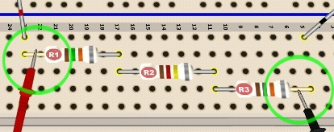

Measuring the voltage in a circuit is like measuring the drop in pressure across two points.
|  Figure 1. Measuring across R1 |
 Figure 2. Measuring across R2 |
Figure 1 shows a measurement of the voltage drop across R1. When set to read voltage, the DMM will read the the voltage VR1. Compare that with Figure 2: a measurement of the voltage drop across R2, that is, VR2.
Notice that the circuit is active when making voltage measurements. Because the DMM in voltage mode has a very high resistance, it usually has little effect on the circuit when connected across components like this.
Now consider Figure 3. In this case, the probes measure the voltage drop VRTOT across the total series resistance of RTOT = R1 + R2 + R3. Can you see how this works out? VRTOT = VR1 + VR2 + VR3 |
 Figure 3. Measuring across R1, R2, R3 |